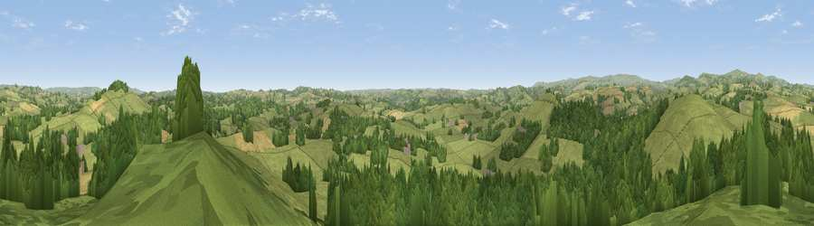

Viewpoint near Broadhempston
#10974 in England · top 24% of its area beats it · near Broadhempston · access?Where it is
The exact computed spot (SX 80175 67375). Click the marker for map links.
Public access: no public right of way or access land is recorded at this exact spot — it may be on private land. Computed from Natural England's CRoW access layer and OpenStreetMap rights of way — not the legal definitive map. Always verify locally.
The view, rendered

A 360° render of this exact spot computed from the terrain model, tree cover and land cover — summer colours, afternoon light, calibrated against photographs of famous viewpoints. Real trees, hedges and buildings will differ in detail.
The panorama
Grey silhouette: terrain skyline in each direction (720 bearings, Earth curvature and refraction included). Dashed green: skyline with trees (+15 m) and buildings (+8 m) as obstacles. Blue strip: how far the ground is visible on each bearing.
Where the view opens
Wedge length = distance to the farthest visible ground on that bearing (vegetation-aware). Rings at 10, 25 and 50 km.
What fills the view
48% grassland · 45% woodland · 6% cropland ·
Angular shares of the visible panorama (visual magnitude), not map area. Landscape diversity 0.40 (0–1 Shannon).
Key numbers
More beautiful places nearby
The staircase of upgrades: each row has a higher view potential than everything closer. Driving times are estimates from straight-line distance, calibrated against real road routing — check an actual route before setting out.
| Place | Direction | Drive | Score |
|---|---|---|---|
| Viewpoint near Landscove | W · 3 km | ~7 min | 65.8 |
| Chuley Hill | W · 5 km | ~11 min | 65.9 |
| Telegraph Hill | N · 6 km | ~12 min | 69.6 |
| Viewpoint near South Knighton | NNE · 6 km | ~13 min | 69.9 |
| Viewpoint near Berry Pomeroy | SE · 7 km | ~15 min | 76.6 |
| Beacon Hill | SE · 8 km | ~16 min | 82.3 |
| Viewpoint near Stokeinteignhead | ENE · 13 km | ~23 min | 84.1 |
| Viewpoint near Hope | SSW · 31 km | ~48 min | 84.4 |
50.49389, -3.69069 · source: screening · position refined by local search. Computed location — check access rights before visiting.